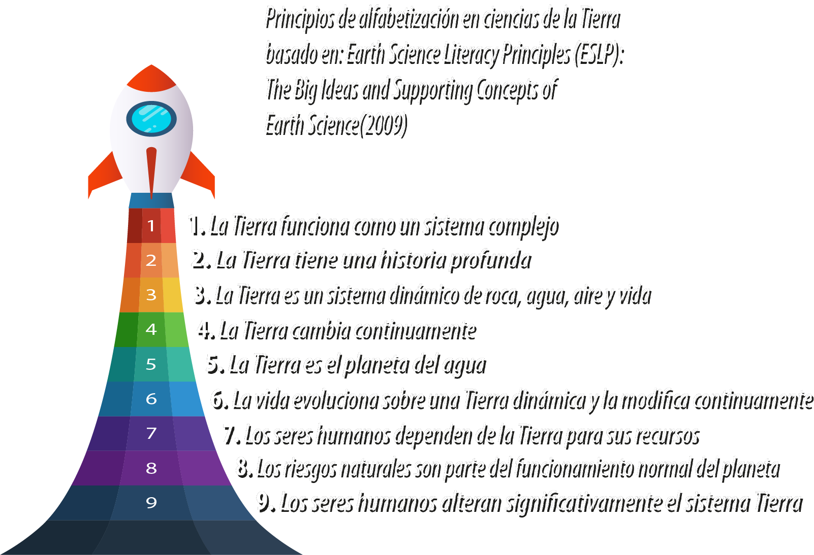
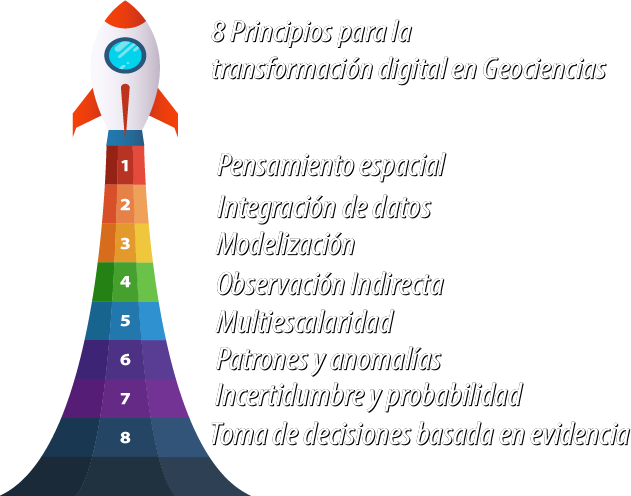
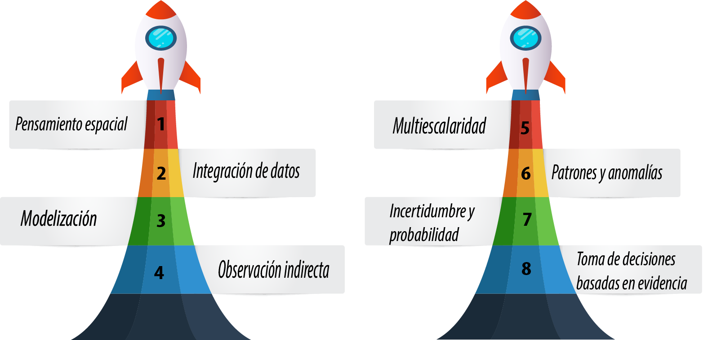

1. Transformación Digital en Geociencias#
1.1. Principios de Alfabetización de la tierra#
Comprender la Tierra es comprender el sistema que hace posible la vida y sostiene a las sociedades humanas. Los principios de alfabetización en ciencias de la Tierra (Earth Science Literacy Principles {cite:p}ESLP2009) definen el núcleo conceptual de las geociencias al establecer qué significa entender científicamente el funcionamiento del planeta y su relación con la sociedad. No se trata de una lista de contenidos, sino de un marco integrador que articula sistemas, procesos, escalas espaciales y temporales, y formas de observación y modelización. Estos principios constituyen un suelo epistemológico común para la investigación, la educación y la toma de decisiones, y continúan vigentes en la era de la observación de la Tierra, la información geoespacial y la ciencia de datos.
{kind=link}

Fig. 1.1 Principios de alfabetización en ciencias de la Tierra#
1.1.1. 1. La Tierra funciona como un sistema complejo#
La Tierra es un sistema integrado compuesto por la geosfera, la hidrosfera, la atmósfera, la biosfera y la criosfera, cuyas interacciones determinan el comportamiento del planeta. Los flujos de energía y el ciclo de la materia conectan estos subsistemas, de modo que los cambios en uno de ellos pueden propagarse y amplificarse en los demás.
Comprender la Tierra requiere, por tanto, un enfoque sistémico que reconozca interdependencias, retroalimentaciones y no linealidades, así como la coexistencia de procesos estables, graduales y abruptos, cuyos efectos pueden resultar acumulativos, inesperados o irreversibles.
1.1.2. 2. La Tierra tiene una historia profunda#
La Tierra tiene aproximadamente 4.600 millones de años, y su historia se extiende a escalas temporales que exceden ampliamente la experiencia humana. Los procesos actuales solo pueden interpretarse plenamente cuando se los sitúa en el contexto del tiempo geológico profundo.
Rocas, sedimentos, fósiles y registros geoquímicos constituyen un archivo natural que permite reconstruir la evolución del planeta, desde su formación hasta los cambios climáticos, tectónicos y biológicos que han modelado su estado actual.
1.1.3. 3. La Tierra es un sistema dinámico de roca, agua, aire y vida#
Los procesos terrestres resultan de la interacción continua entre roca, agua, aire y vida, impulsados por energía proveniente tanto del Sol como del interior del planeta. Estos intercambios explican fenómenos como el clima, la circulación oceánica, los ciclos biogeoquímicos y la evolución de los ecosistemas.
Las interacciones entre sistemas operan en un amplio rango de escalas espaciales y temporales, desde procesos microscópicos hasta dinámicas globales, y desde fracciones de segundo hasta miles de millones de años, configurando un sistema inherentemente dinámico.
1.1.4. 4. La Tierra cambia continuamente#
La Tierra está en constante transformación debido a procesos geológicos, físicos, químicos y biológicos que actúan de forma continua o episódica. Estos procesos incluyen la tectónica de placas, el vulcanismo, la erosión, la sedimentación y la deformación de la corteza.
Los paisajes terrestres reflejan el equilibrio dinámico entre fuerzas constructivas y destructivas, moduladas por la gravedad, el clima, el agua y la resistencia de los materiales, dando lugar a cambios tanto graduales como catastróficos.
1.1.5. 5. La Tierra es el planeta del agua#
El agua está presente en todas las esferas del sistema Tierra y desempeña un papel central en los procesos físicos, químicos, biológicos y geológicos. Su capacidad para cambiar de estado, transportar energía y disolver sustancias la convierte en un agente fundamental del clima y del modelado del paisaje.
El ciclo hidrológico conecta océanos, atmósfera, continentes, hielo y subsuelo, y aunque la cantidad total de agua del planeta se mantiene relativamente constante, su distribución espacial y temporal condiciona ecosistemas, sociedades y riesgos.
1.1.6. 6. La vida evoluciona sobre una Tierra dinámica y la modifica continuamente#
La vida ha evolucionado en interacción permanente con los cambios del sistema Tierra, adaptándose a condiciones ambientales variables y, al mismo tiempo, transformando activamente el planeta. La fotosíntesis, la formación de suelos y los ciclos biogeoquímicos son ejemplos de esta coevolución.
La diversidad biológica actual es el resultado contingente de la historia del planeta, marcada por episodios de extinción, radiación evolutiva y cambios ambientales, que continúan influyendo en la configuración de la biosfera.
1.1.7. 7. Los seres humanos dependen de la Tierra para sus recursos#
Las sociedades humanas dependen de la Tierra para obtener agua, energía, alimentos, minerales y materiales esenciales. Estos recursos son limitados y se distribuyen de manera desigual, como resultado de procesos geológicos y climáticos del pasado.
Las geociencias desempeñan un papel clave en la identificación, gestión y uso responsable de los recursos, así como en el desarrollo de alternativas sostenibles que reduzcan impactos ambientales y aseguren su disponibilidad futura.
1.1.8. 8. Los riesgos naturales son parte del funcionamiento normal del planeta#
Terremotos, erupciones volcánicas, inundaciones, sequías y otros fenómenos extremos son expresiones naturales de los procesos del sistema Tierra. El riesgo surge cuando estos procesos interactúan con poblaciones humanas, infraestructuras y decisiones de ocupación del territorio.
La reducción del riesgo depende de la observación continua del planeta, la comprensión de los procesos subyacentes y el desarrollo de políticas y prácticas basadas en conocimiento científico.
1.1.9. 9. Los seres humanos alteran significativamente el sistema Tierra#
Las actividades humanas han convertido a la humanidad en un agente geológico capaz de modificar paisajes, ciclos biogeoquímicos, biodiversidad y clima a escalas locales y globales. Muchas de estas transformaciones ocurren a ritmos sin precedentes en la historia del planeta.
Comprender y documentar estos impactos es esencial para promover una gestión responsable del sistema Tierra, fortalecer la cooperación internacional y fomentar decisiones informadas que reduzcan efectos irreversibles sobre las generaciones futuras.
1.1.10. Síntesis conceptual#
En conjunto, los Earth Science Literacy Principles definen a las geociencias como ciencias:
de sistemas complejos
multiescalares en espacio y tiempo
basadas en observación, datos y modelos
intrínsecamente vinculadas a la sociedad
Este marco establece la base conceptual sobre la cual se apoyan la Observación de la Tierra, la información geoespacial, la ciencia de datos y los procesos contemporáneos de transformación digital en geociencias
1.2. 8 Principios para la transformación digital en Geociencias#
En la primera sección de este capítulo recorrimos los Principios de Alfabetización en Ciencias de la Tierra: nueve ideas que funcionan como base común para comprender el sistema Tierra y para formar ciudadanía científica. Esa base es clave, porque nos recuerda que la alfabetización no es acumular contenidos, sino aprender a pensar con evidencia sobre procesos complejos, dinámicos y profundamente interconectados. Ahora entramos en la segunda parte. Acá vamos a presentar una propuesta de ocho principios para la transformación digital en la enseñanza de las geociencias, con foco en geografía y en el uso contemporáneo de SIG, infraestructuras de datos espaciales, teledetección, ciencia de datos y GeoAI. Durante años repetimos una consigna simple: “más datos, mejores modelos”. Hoy sabemos que eso, por sí solo, no alcanza. El salto real ocurre cuando los datos, la cartografía digital y los modelos se convierten en mejores preguntas, mejores explicaciones y mejores decisiones; cuando sabemos qué podemos afirmar con confianza, qué no, y cómo justificarlo de manera clara.
Por eso, estos ocho principios no son una lista de herramientas. Son un marco integrado para pensar el territorio y el sistema Tierra en entornos digitales: cómo representamos el espacio, cómo integramos evidencia, cómo modelamos e inferimos lo que no se observa directamente, y cómo todo eso se traduce —con incertidumbre explícita— en decisiones responsables.
{kind=link}

Fig. 1.2 8 principios para la transformación digital en la enseñanza en ciencias de la Tierra#
Conviene aclarar algo desde el inicio. Los primeros cuatro principios se orientan a cómo se construye el conocimiento geocientífico en entornos digitales: cómo representamos el espacio, cómo integramos datos con significado compartido, cómo modelamos y cómo trabajamos con observaciones indirectas. Los cuatro principios siguientes desplazan el énfasis hacia cómo ese conocimiento se vuelve operativo: cómo se articula entre escalas, cómo se usa para detectar regularidades y cambios, cómo se hace explícita la incertidumbre y cómo se traduce en decisiones basadas en evidencia. Pero no se trata de una separación tajante. Comprender y actuar forman un continuo: el conocimiento se fortalece cuando se pone en práctica, y la acción solo es responsable cuando conserva trazabilidad, supuestos explícitos y validación.
{kind=link}

Fig. 1.3 2 clusters principios para la transformación digital en la enseñanza en ciencias de la Tierra#
En esta sección se describen 8 principios, cada uno de ellos conecta fundamentos epistemológicos de las ciencias de la Tierra con prácticas contemporáneas de SIG, teledetección, ciencia de datos y modelos basados en inteligencia artificial aplicados a información geoespacial (geoAI).
1.2.1. 1. Pensamiento espacial: Pensamiento espacial como infraestructura cognitiva.#
En geociencias, explicar la Tierra empieza por pensar en el espacio. Pero pensar espacialmente no es solo ubicar cosas en un mapa. Es trabajar con cinco ideas que ordenan el mundo: forma, distancia, conectividad, gradientes y cambio. El pensamiento espacial es una competencia integradora: articula percepción y cognición espacial, conceptos, herramientas de representación y procesos de razonamiento. Se expresa en el uso de mapas, perfiles, modelos tridimensionales, SIG e infraestructuras de datos espaciales. El giro digital es clave. Hoy, el pensamiento espacial no ocurre en un vacío cognitivo: está mediado por catálogos, metadatos, servicios interoperables y datos multiescala y multitemporales. En ese entorno emerge la GeoAI, capaz de aprender patrones espaciales en volúmenes de datos antes inabordables. Y entonces cambia el significado del mapa. El mapa deja de ser solo un producto final: se convierte en una interfaz operativa. No solo leemos mapas: razonamos con ellos, iteramos, validamos y volvemos a preguntar.
Si el pensamiento espacial es el lenguaje básico, el siguiente principio define cómo construimos significado compartido a partir de múltiples fuentes: integrar datos.
Ampliación: En geociencias, explicar la Tierra comienza por pensar en el espacio: forma, distancia, conectividad, gradientes y cambio. En la enseñanza, el pensamiento espacial se entiende como una competencia integradora que combina conceptos espaciales, herramientas de representación —mapas, perfiles, modelos tridimensionales, sistemas de información geográfica e infraestructuras de datos espaciales— y procesos de razonamiento para formular preguntas, interpretar evidencias y comunicar explicaciones [National Research Council, 2006]. En las geociencias contemporáneas, este razonamiento espacial no ocurre en un vacío cognitivo, sino que está mediado por entornos de información geoespacial que organizan el acceso y la interpretación del espacio, tales como catálogos espaciales, servicios interoperables (por ejemplo, WMS y WFS), metadatos y conjuntos de datos multiescala y multitemporales. En este contexto, la competencia espacial se amplifica mediante GeoAI, donde algoritmos capaces de aprender patrones espaciales permiten explorar relaciones complejas en grandes volúmenes de datos geoespaciales y observaciones de la Tierra [Janowicz et al., 2020].
Pensamiento Espacial
Diversos autores han definido el pensamiento espacial desde distintas disciplinas, coincidiendo en que se trata de una forma de razonamiento fundamental para comprender y actuar en el entorno. En términos generales, el pensamiento espacial permite organizar, interpretar y utilizar información relacionada con la localización, la forma, la distancia y las relaciones entre objetos en el espacio.
Uno de los aportes más influyentes proviene de Downs y Stea, quienes definieron el pensamiento espacial como la capacidad humana para percibir, codificar, almacenar y manipular información espacial, destacando el papel central de los mapas cognitivos en la interacción con el entorno [Downs and Stea, 1973]. Desde la geografía del comportamiento, estos autores sostienen que el pensamiento espacial es clave para la orientación, la toma de decisiones y la conducta espacial.
Desde la psicología cognitiva, Stephen M. Kosslyn conceptualizó el pensamiento espacial como la habilidad para generar, inspeccionar y transformar imágenes mentales, especialmente aquellas vinculadas con la forma, el tamaño, la distancia y la orientación [Kosslyn, 1980, Kosslyn, 1994]. Según este enfoque, los procesos de visualización mental constituyen un componente esencial del razonamiento y del aprendizaje científico.
En el ámbito educativo, el National Research Council propuso una definición ampliamente aceptada que entiende el pensamiento espacial como la integración de conceptos espaciales, herramientas de representación y procesos de razonamiento [National Research Council, 2006]. Esta perspectiva subraya su carácter transversal y su importancia para disciplinas como la geografía, las ciencias naturales, la ingeniería y las matemáticas.
Reginald G. Golledge amplió esta visión al señalar que el pensamiento espacial implica comprender cómo los objetos, eventos y personas se organizan y se relacionan en el espacio, así como aplicar ese conocimiento para resolver problemas cotidianos y científicos [Golledge, 1995]. Asimismo, destacó que esta capacidad puede desarrollarse progresivamente mediante la educación.
Finalmente, Jerome Bruner contribuyó de forma indirecta a la conceptualización del pensamiento espacial al proponer que el conocimiento se representa mediante modos enactivo, icónico y simbólico []. Su planteamiento refuerza la importancia de las representaciones visuales y espaciales en la construcción del conocimiento.
Forma, distancia, conectividad, gradientes y cambio.
Esos conceptos no fueron arbitrarios. Están fundamentados teórica y empíricamente en la literatura sobre pensamiento espacial, especialmente en geociencias, geografía y educación científica [Downs and Stea, 1973, Montello, 2009, National Research Council, 2006]. Te explico por qué, concepto por concepto, y desde qué marcos se justifican.
En primer lugar, la forma es un concepto espacial básico porque permite describir y comparar objetos y fenómenos geográficos (relieve, cuencas, placas, continentes). En pensamiento espacial, la forma está asociada a la representación y visualización: reconocer patrones, geometrías y configuraciones. Autores como Kosslyn y la psicología cognitiva muestran que sin forma no hay imagen mental estable, y en geociencias esto es clave para interpretar mapas, modelos digitales del terreno o secciones geológicas [Kosslyn, 1980, Kosslyn, 1994].
La distancia es fundamental porque introduce la escala y la magnitud, dos ideas centrales en geociencias. Pensar espacialmente implica comprender qué tan lejos, qué tan grande o qué tan rápido ocurre algo. El National Research Council identifica la distancia como uno de los conceptos espaciales nucleares, ya que permite razonar sobre procesos que ocurren desde lo local a lo global (por ejemplo, la distancia entre focos sísmicos, estaciones climáticas o masas de aire) [National Research Council, 2006].
La conectividad está sólidamente fundamentada en la geografía y las ciencias de la Tierra porque el sistema terrestre funciona como una red de interacciones. Ríos conectados en cuencas, corrientes oceánicas, flujos de energía y materia, o la relación atmósfera–biosfera son ejemplos clásicos. Desde el pensamiento espacial, la conectividad permite pasar de ver “lugares aislados” a comprender sistemas espaciales, algo subrayado por autores como Golledge en el razonamiento geográfico [Downs and Stea, 1973, Golledge, 1995].
Los gradientes (cambios progresivos en el espacio, como temperatura, altitud, presión o humedad) son un concepto especialmente propio de las geociencias. Están profundamente ligados al pensamiento espacial porque exigen razonar cómo una variable cambia de un lugar a otro, no solo dónde está. Esto conecta directamente con la noción de relaciones espaciales: no basta con ubicar fenómenos, hay que entender cómo varían espacialmente [Liben, 2009, National Research Council, 2006].
Finalmente, el cambio introduce la dimensión espacio–tiempo, que es esencial en geociencias. Los procesos terrestres (erosión, tectónica, clima, evolución del paisaje) no solo ocurren en el espacio, sino que transforman el espacio. El pensamiento espacial avanzado integra esta idea: comparar estados pasados, presentes y futuros de un sistema espacial. El NRC y la didáctica de las geociencias coinciden en que comprender el cambio espacial es clave para explicar la Tierra como sistema dinámico [Montello, 2009, National Research Council, 2006].
En síntesis, esos conceptos —forma, distancia, conectividad, gradientes y cambio— corresponden a núcleos conceptuales del pensamiento espacial porque describen qué es el espacio (forma, distancia), explican cómo se relaciona (conectividad, gradientes), y permiten entender cómo evoluciona (cambio) [Downs and Stea, 1973, Montello, 2009, National Research Council, 2006].
1.2.2. 2. Integración de datos: Integración de datos como gobernanza del significado.#
La geociencia contemporánea se construye integrando fuentes heterogéneas: trabajo de campo, redes de observación en superficie, sensorización in situ, teledetección y modelos numéricos. Integrar datos no es apilar capas. Es alinear información en espacio y tiempo, evaluar coherencias internas y contrastar mediciones indirectas con redes de apoyo y campañas expertas. Aquí lo esencial es la trazabilidad: saber de dónde viene cada dato, cómo fue procesado y qué supuestos incorpora. Y también la interoperabilidad, que permite que los datos circulen entre sistemas, escalas y disciplinas mediante estándares abiertos y modelos compartidos. El ejemplo paradigmático son las variables esenciales para la observación del clima: cuando la comunidad define un conjunto mínimo consensuado, observado de forma estandarizada, se habilitan comparaciones globales y reproducibles. Pero hay un punto clave: integrar datos también es coordinar significados. La interoperabilidad técnica no alcanza; sin interoperabilidad semántica, lo que integramos es ruido. De ahí la importancia de ontologías explícitas y catálogos de objetos geográficos nacionales y regionales, que consensúan categorías, definiciones y relaciones compartidas entre distintos actores y organismos. Estos marcos semánticos permiten que los datos producidos en contextos institucionales diversos puedan interpretarse de manera consistente, compararse entre jurisdicciones y reutilizarse sin ambigüedades, fortaleciendo la coherencia del conocimiento geoespacial.
Ampliacion: La construcción de conocimiento geocientífico se apoya en la integración sistemática de múltiples fuentes de datos, entre ellas observaciones de campo, redes de medición en superficie, sensorización in situ, teledetección y modelos numéricos, articuladas mediante metadatos consistentes y trazabilidad explícita. Este principio adquiere centralidad cuando científicos y técnicos geoespaciales alinean información heterogénea en el espacio y el tiempo, evalúan su coherencia interna y contrastan mediciones indirectas provenientes de sensores remotos con redes de apoyo en terreno, tales como estaciones meteorológicas, redes hidrológicas, geodésicas o ambientales, así como campañas de trabajo de campo dirigidas por expertos.
La integración efectiva de datos exige, además, el uso y la producción de información interoperable, capaz de circular entre sistemas, escalas y disciplinas mediante estándares abiertos, servicios geoespaciales y modelos de datos compartidos. En este marco, resulta fundamental articular datos de observación y sensorización con bases de datos geoespaciales estructuradas —como catastros, inventarios de recursos hídricos, registros de defensa civil, planificación territorial o infraestructura crítica— alojadas en bases de datos espaciales, de modo que la información gráfica, administrativa y ambiental pueda analizarse de forma conjunta. La noción de variables esenciales para la observación del clima constituye un ejemplo paradigmático de este enfoque, al mostrar cómo la definición consensuada de un conjunto mínimo de variables, observadas de manera estandarizada y sostenida en el tiempo, permite coordinar mediciones provenientes de múltiples plataformas y formular preguntas científicas comparables y reproducibles a escala regional y global [Bojinski et al., 2014], [Global Climate Observing System (GCOS), 2024].
En las geociencias contemporáneas, este principio se ve reforzado por la complementariedad entre sistemas expertos de medición e interpretación en terreno y enfoques de GeoAI orientados a la detección de patrones, anomalías y relaciones complejas en grandes volúmenes de datos geoespaciales. La integración entre ambos enfoques no sustituye el juicio experto, sino que lo amplifica, permitiendo desarrollar un pensamiento crítico informado sobre la calidad, los límites y los sesgos de los datos, y sostener análisis reproducibles, comparables y operativamente relevantes para la investigación científica y la toma de decisiones.
Cuando los datos están bien integrados y semánticamente alineados, el paso siguiente es inevitable: construir modelos para explicar y explorar el sistema Tierra.
1.2.3. 3. Modelización: Modelización como mediación entre datos, teoría y decisión.#
Modelar es construir representaciones formales del sistema Tierra para explicar mecanismos, explorar escenarios y evaluar consecuencias. Existen modelos conceptuales, numéricos, estadísticos y basados en datos. En educación y práctica científica, la modelización obliga a hacer explícitos los supuestos, las escalas de validez y los criterios de contraste con observaciones, y permite comprender que la coincidencia entre un modelo y las observaciones no implica una única ni definitiva explicación de los procesos que gobiernan el sistema [Oreskes et al., 1994]. Con la GeoAI y la transformación digital en geociencias, el concepto de modelo se amplía y se reconfigura. A las formulaciones clásicas se suman redes neuronales, redes convolucionales, arquitecturas especializadas y modelos fundacionales que se adaptan por ajuste fino, habilitando nuevos tipos de modelos regionales capaces de integrar grandes volúmenes de datos multifuente, multiescala y multitemporal. Esto crea capacidades inéditas para caracterizar procesos espaciales complejos a escalas regionales, pero también plantea un desafío epistemológico: evaluar, transferir y adaptar modelos sabiendo que su significado depende del dominio, la resolución, el contexto y las condiciones de entrenamiento. En sistemas naturales complejos no existe un modelo “verdadero”. Los modelos funcionan como hipótesis plausibles para explorar rangos de comportamiento, comparar escenarios y orientar la toma de decisiones, no como descripciones finales de la realidad.
Ampliación: En el contexto de la ciencia de datos y la GeoAI, el concepto de modelo se amplía para incluir arquitecturas de aprendizaje automático que aprenden representaciones directamente a partir de grandes volúmenes de datos geoespaciales. Estos modelos no son estáticos: evolucionan desde enfoques específicos —por ejemplo, arquitecturas diseñadas para un sensor, una región o una variable— hacia modelos más generales y reutilizables, incluyendo modelos entrenados a escala regional, continental o global, así como modelos fundacionales capaces de adaptarse a múltiples tareas mediante ajuste fino. Esta diversidad de escalas y arquitecturas refuerza la necesidad de desarrollar capacidades para evaluar, adaptar y transferir modelos, reconociendo que su desempeño y significado dependen del dominio, la resolución y el contexto de aplicación.
En aplicaciones ambientales, enfoques como GLUE han subrayado la importancia de calibrar modelos y propagar explícitamente la incertidumbre en las predicciones, recordando que tanto los modelos físicos como los modelos basados en datos deben ser interpretados como herramientas para explorar rangos plausibles de comportamiento del sistema, y no como representaciones únicas o definitivas de la realidad [Beven and Binley, 1992]
Muchos de estos modelos —especialmente los que operan a escala regional y global— comparten una característica clave: se apoyan en observaciones que no son directas, sino inferidas a partir de señales, proxies y representaciones intermedias.
1.2.4. 4. Observación indirecta: Observación indirecta y conocimiento reproducible.#
En geociencias, gran parte de lo relevante no se observa directamente. Se infiere a partir de señales remotas, proxies y modelos de inversión, obtenidos mediante sensorización satelital, plataformas aerotransportadas y drones, así como a partir de redes de sensores en superficie. Enseñar observación indirecta es enseñar inferencia y límites: cómo una medición se traduce en una variable de interés, qué supuestos intervienen, qué transformaciones se aplican y qué ambigüedades persisten. Esto incluye comprender el rol de redes GNSS, estaciones meteorológicas, sismógrafos, redes climáticas e hidrológicas, que funcionan tanto como fuentes primarias de observación como referencias para validación y calibración de mediciones remotas. El acceso abierto a archivos satelitales históricos y operativos —como Landsat y Sentinel—, combinado con observaciones de aeronaves, vehículos aéreos no tripulados y redes in situ, habilitó series extensas, multisensor y multiescala para analizar cambios ambientales, dinámicas territoriales y riesgos naturales. El salto más reciente es organizacional y epistemológico: los cubos de datos de observación de la Tierra. No son solo almacenamiento, sino infraestructura analítica: integran imágenes satelitales, productos derivados y observaciones de redes instrumentales en series coherentes, comparables y reproducibles, fortaleciendo la trazabilidad y la transferencia del conocimiento.
Ampliación: Mucho de lo relevante en geociencias no se observa directamente, sino que se infiere a partir de señales remotas, proxies y modelos de inversión. Enseñar observación indirecta es enseñar inferencia científica y sus límites: cómo una medición se traduce en una variable de interés, qué supuestos intervienen en esa traducción y qué ambigüedades persisten. El acceso abierto a archivos satelitales históricos y operativos, como el programa Landsat tras su política de datos y las misiones Sentinel del programa Copernicus, ha hecho posible trabajar con series temporales extensas, multiesensor y multiescala, fundamentales para el análisis de cambios ambientales y la evaluación de riesgos [U.S. Geological Survey, 2008].
En este contexto, la adopción del paradigma de cubos de datos satelitales, actualmente impulsado por diversos países de América Latina, representa un avance significativo para la observación indirecta sistemática. Los cubos de datos organizan grandes volúmenes de imágenes satelitales como series espacio-temporales coherentes, preprocesadas y listas para el análisis, facilitando la integración entre sensores, la comparación entre regiones y la reproducibilidad de los resultados. Este enfoque fortalece la capacidad de científicos y técnicos geoespaciales para analizar procesos de largo plazo, contrastar observaciones remotas con información de terreno y desarrollar productos transferibles y comparables entre distintos contextos geográficos y temporales.
Hasta acá hablamos principalmente de cómo comprendemos el sistema Tierra a partir de observaciones indirectas. A partir de ahora, el foco se desplaza gradualmente hacia cómo operamos, detectamos y actuamos sobre esa comprensión en entornos geospaciales.
1.2.4.1. 5: Multiescalaridad: Multiescalaridad como propiedad emergente de sistemas geoespaciales.#
La Tierra no opera en una sola escala. Los procesos se acoplan en múltiples escalas espaciales y temporales: lo local depende de lo regional y global; lo rápido interactúa con lo lento. Enseñar multiescalaridad no es “hacer zoom”. Es justificar por qué una escala es pertinente para una pregunta científica sin romper la causalidad. En la era digital, la multiescalaridad se vuelve una propiedad emergente de los sistemas geoespaciales: resoluciones variables, agregaciones dinámicas y modelos entrenados en dominios específicos que luego se transfieren a otros contextos. Esto introduce un desafío central: cuándo esa transferencia es legítima y cuándo introduce artefactos. Por eso, la multiescalaridad exige alfabetización avanzada y documentación explícita de supuestos.
Ampliacion: Los procesos del sistema Tierra se manifiestan y se acoplan a través de múltiples escalas espaciales y temporales, de modo que los fenómenos observables a nivel local están condicionados por dinámicas regionales y globales, y los eventos de corta duración pueden interactuar con procesos de evolución lenta. Enseñar multiescalaridad implica desarrollar la capacidad de cambiar de resolución espacial y temporal de manera consciente, preservando la coherencia causal de la explicación y justificando por qué una determinada escala resulta pertinente para una pregunta científica específica.
En este marco, adquiere especial relevancia la generación de productos geoespaciales diseñados con criterios de escalabilidad, de forma que puedan ser aplicados a otros recortes espaciales y temporales mediante los ajustes metodológicos necesarios. Pensar en escalabilidad implica explicitar supuestos de resolución, soporte espacial, frecuencia temporal y validez del modelo o indicador, permitiendo su reutilización, comparación y adaptación en contextos distintos al de su desarrollo original. Este enfoque es clave tanto para la investigación reproducible como para aplicaciones operativas que requieren transferir conocimiento entre regiones o períodos de análisis.
La multiescalaridad también exige un pensamiento crítico explícito sobre la estructura de los datos y los procesos, incorporando la identificación de dependencias espaciales y temporales, la presencia de heterogeneidad y homogeneidad, y fenómenos como la autocorrelación espacial y temporal. Reconocer estas propiedades es fundamental para evitar inferencias erróneas al cambiar de escala y para comprender cómo emergen patrones distintos según el nivel de agregación o desagregación considerado. En la práctica, el análisis espacio-temporal y el cómputo a gran escala, junto con enfoques de modelización y aprendizaje automático, facilitan explorar estas relaciones y modelar conexiones de largo alcance entre procesos que operan a distintas escalas [Reichstein et al., 2019].
Cuando operamos en múltiples escalas, lo que emerge con fuerza son regularidades… y desviaciones.
1.2.4.2. 6: Patrones y anomalías: Patrones y anomalías como motores de inferencia.#
Reconocer patrones es inferir procesos; detectar anomalías es identificar eventos, cambios o inconsistencias que alteran una normalidad esperada, ya sea por transformaciones reales del sistema Tierra o por limitaciones en los datos y los métodos. En la práctica geoespacial contemporánea, patrones y anomalías no son solo resultados finales: funcionan como disparadores operativos. Una anomalía puede activar verificación en terreno, revisión de insumos, recalibración de modelos o actualización de productos operativos. Aquí, la GeoAI, apoyada en Machine Learning y en su subárea más reciente, el Deep Learning, amplía de manera sustantiva las capacidades de clasificación, detección de objetos, segmentación y detección de cambios en grandes volúmenes de datos espaciales y temporales. Estas técnicas permiten aprender regularidades complejas, no lineales y multiescalares, imposibles de capturar mediante reglas explícitas, y aplicar ese aprendizaje a la detección automatizada de patrones, objetos y anomalías. Por eso, es clave formar capacidades para definir referencias, umbrales y métricas, comprender falsos positivos y falsos negativos, evaluar desempeño de modelos y documentar decisiones. El uso de algoritmos avanzados no elimina la necesidad de juicio experto: la desplaza hacia la interpretación, la validación y el control de calidad. La GeoAI habilita monitoreo continuo y automatizado de cambios, pero el objetivo no es “automatizar la verdad”. Es sostener ciclos robustos de inferencia y validación, donde los resultados algorítmicos se contrastan con evidencia independiente y conocimiento del dominio.
Ampliacion:Reconocer patrones es inferir procesos; detectar anomalías es encontrar eventos, cambios o errores que alteran la normalidad. En el aula, este principio se trabaja mediante la lectura de mapas y series temporales, la distinción entre señal y ruido, y la formulación de hipótesis explicativas. La detección de anomalías constituye un marco clásico en ciencia de datos y resulta particularmente útil para diseñar actividades con sensores y sistemas de información geográfica [Chandola et al., 2009]. En el contexto de GeoAI, estos enfoques habilitan el monitoreo automatizado de cambios en imágenes y flujos continuos de datos geoespaciales [Janowicz et al., 2020].
Toda detección —especialmente cuando está mediada por modelos de aprendizaje automático— nos enfrenta a una pregunta inevitable: ¿cuánta confianza tenemos en las inferencias que estamos haciendo?
1.2.4.3. 7: Incertidumbre y probabilidad: Incertidumbre, modelización y explicabilidad.#
En ciencias de la Tierra, la incertidumbre no es un defecto: es una condición constitutiva del conocimiento. Los datos son incompletos, los sistemas abiertos y los resultados no únicos. Enseñar incertidumbre implica cuantificar error, explorar sensibilidad y comunicar probabilidades sin falsas certezas. La verificación completa de modelos naturales es inalcanzable; solo existen confirmaciones parciales condicionadas por supuestos. En entornos geoespaciales digitales, aparece además la incertidumbre algorítmica, asociada a los datos de entrenamiento, la arquitectura de los modelos y la transferencia entre dominios. De ahí la importancia creciente de la explicabilidad, para comprender bajo qué condiciones un modelo produce determinados resultados y con qué grado de confiabilidad. Razonar con escenarios plausibles es clave. De lo contrario, tomamos decisiones como si el mundo fuera determinista… y la Tierra no lo es.
En las ciencias de la Tierra, la incertidumbre es parte constitutiva del conocimiento: los datos son incompletos, los sistemas son abiertos y los resultados no son únicos. Enseñar incertidumbre implica cuantificar el error, explorar la sensibilidad de los modelos y comunicar probabilidades sin recurrir a falsas certezas. Se ha mostrado que la verificación completa de modelos de sistemas naturales es inalcanzable y que solo es posible una confirmación parcial, siempre condicionada por supuestos y observaciones disponibles [Oreskes et al., 1994].
Aceptar la incertidumbre no paraliza la acción. Al contrario: nos prepara para decidir mejor.
1.2.4.4. 8: Toma de decisiones basadas en evidencia: Toma de decisiones como práctica socio-técnica.#
Las geociencias alcanzan su dimensión más decisiva cuando sustentan decisiones sobre riesgo, ordenamiento territorial y recursos naturales. El arco lógico es claro: datos → modelos → escenarios con incertidumbre → decisiones. Y cada transición implica supuestos, límites y responsabilidades. Decidir con evidencia no es aplicar mecánicamente un resultado. Es evaluar la calidad de los datos, interpretar el modelo según su dominio de validez y ponderar escenarios con incertidumbre explícita. En el mundo geoespacial, esto es también institucional. Por eso es clave distinguir entre:
Gobernanza de datos, que define responsabilidades, reglas y rendición de cuentas.
Gestión de datos, que implementa el ciclo de vida técnico del dato mediante normas y estándares.
GeoAI amplifica la capacidad operativa, pero también exige transparencia, explicabilidad y legitimidad social.
Ampliación: Las geociencias adquieren su dimensión más decisiva cuando informan y sustentan la toma de decisiones relacionadas con el riesgo, el ordenamiento territorial y la gestión de los recursos naturales. En este principio, el arco lógico es explícito: datos → modelos → escenarios con incertidumbre → decisiones, reconociendo que cada transición implica supuestos, límites y responsabilidades. La alfabetización en ciencias de la Tierra subraya que comprender procesos, evidencias e incertidumbres forma parte de la ciudadanía científica y de una gestión responsable del sistema Tierra [Earth Science Literacy Initiative, 2009]
La toma de decisiones basada en evidencia no es únicamente un desafío técnico, sino también un desafío de gobernanza y gestión del dato. La calidad, disponibilidad, interoperabilidad y trazabilidad de la información dependen de marcos normativos, estándares y buenas prácticas —como las normas técnicas para la gestión de datos— que aseguren consistencia, transparencia y reutilización. En este sentido, la adopción de marcos regionales y globales de gobernanza de la información geoespacial, como los promovidos por UN-IGIF, resulta clave para alinear políticas públicas, fortalecer la cooperación entre instituciones y garantizar que los datos geoespaciales se utilicen de manera coherente y sostenible.
En este marco, GeoAI aporta una capacidad operativa sin precedentes para sostener, actualizar y analizar evidencia a grandes escalas espaciales y temporales, apoyando tanto decisiones técnicas como procesos de gobernanza informada [Janowicz et al., 2020].La articulación entre enfoques tecnológicos avanzados, marcos de gobernanza compartidos y estándares comunes no solo mejora la calidad de las decisiones, sino que fortalece la sostenibilidad, el aprendizaje colectivo y el desarrollo de capacidades dentro de ecosistemas digitales geoespaciales, permitiendo que el conocimiento generado sea transferible, comparable y útil más allá de contextos locales.
1.2.5. Cierre Conceptual#
Antes de cerrar, es necesario explicitar una dimensión transversal a todos estos principios: la ética. La transformación digital y el uso creciente de I A y Geo I A no son neutros. Los datos pueden estar incompletos o sesgados; los modelos aprenden a partir de historias previas; y las decisiones automatizadas pueden amplificar desigualdades si no se las diseña, evalúa y gobierna con criterios explícitos. Reconocer y gestionar los sesgos algorítmicos, documentar supuestos, asegurar trazabilidad y promover explicabilidad no es un agregado opcional: es una condición para que estos principios sostengan prácticas científicas y decisiones socialmente legítimas. Estos ocho principios no son una checklist. Son una tesis: la transformación digital en geociencias implica una reconfiguración profunda del modo en que se produce y se utiliza el conocimiento. Somos testigos y actores de ese proceso: pasamos de productos a ecosistemas; de mapas estáticos a interfaces; de datos aislados a infraestructuras gobernadas; de modelos cerrados a modelos adaptativos; de análisis aislados a ciclos continuos de evidencia y decisión. Si la comunidad geoespacial adopta este marco, no solo gana eficiencia. Gana sentido: una forma más robusta, reproducible y responsable de comprender la Tierra y actuar sobre ella.
1.3. Hacia diseños curriculares integrados en ciencia de datos, EO y GeoAI.#
Cuando propongo el título “Transformación digital en geociencias: hacia diseños curriculares integrados”, el uso del plural no es retórico ni estilístico, sino conceptual y político-académico. Hablar de “diseños curriculares integrados” implica asumir, desde el inicio, que no existe ni es deseable un único modelo de formación válido para todas las disciplinas vinculadas a las geociencias. Las geociencias constituyen un campo amplio y heterogéneo, que incluye carreras como geografía, geología, ciencias ambientales, agrimensura y otras, cada una con tradiciones académicas, objetivos formativos y perfiles profesionales distintos. Pretender homogeneizar esa diversidad bajo un esquema único no solo sería inviable, sino conceptualmente empobrecedor.
El enfoque que propongo reconoce explícitamente esa pluralidad de contextos institucionales y disciplinares, y asume que la integración de la transformación digital, la ciencia de datos, la Observación de la Tierra y la GeoAI requiere distintos niveles de profundidad según el nivel de la titulación y el perfil de egreso. No es lo mismo formar un geógrafo orientado al análisis territorial que un geólogo con foco en procesos físicos, o un profesional de ciencias ambientales enfocado en gestión y políticas públicas. Sin embargo, todos ellos comparten hoy un núcleo común: trabajan con datos geoespaciales, con procesos digitalizados y con herramientas algorítmicas que median la producción de conocimiento.
Por eso, el énfasis no está puesto en un modelo curricular cerrado, sino en el principio de integración. Integración entre disciplinas, entre escalas, entre tipos de datos, entre enfoques teóricos y computacionales. Este enfoque resulta particularmente pertinente en espacios como este panel internacional, donde confluyen audiencias diversas y donde el objetivo no es prescribir, sino abrir marcos de reflexión académica compartidos. Desde esta perspectiva, la transformación digital en geociencias no puede reducirse a la incorporación de software o plataformas tecnológicas. Se trata de un cambio más profundo, que afecta la forma en que conceptualizamos el territorio, la manera en que formulamos preguntas científicas y el modo en que diseñamos los procesos de enseñanza y aprendizaje en el nivel superior. La digitalización del territorio y de los procesos terrestres ha convertido a los datos en un elemento estructural de la disciplina, y eso obliga a repensar los currículos desde sus fundamentos. [UNESCO, 2021]
1.3.1. Geociencias, datos y estadística como lenguaje común (Eje: datos como infraestructura científica)#
Entender a las geociencias como ciencias de sistemas complejos resulta central para abordar esta transformación. El territorio no es un conjunto estático de capas, sino un sistema dinámico en el que interactúan procesos físicos, ambientales, biológicos y sociales, a múltiples escalas espaciales y temporales. La digitalización de estos procesos —a través de sensores, modelos y bases de datos— ha generado una disponibilidad sin precedentes de información geoespacial, que incluye datos vectoriales, raster, series temporales extensas, nubes de puntos y datos derivados de múltiples plataformas de Observación de la Tierra. [Earth Science Literacy Initiative, 2009]
En este contexto, la alfabetización en datos deja de ser un complemento y pasa a ser un núcleo formativo esencial. No se trata únicamente de saber acceder a los datos, sino de comprender su calidad, su incertidumbre y los sesgos que pueden introducirse en cada etapa del ciclo de vida del dato geoespacial. Desde la adquisición hasta el análisis, la visualización y la publicación, cada decisión metodológica tiene implicancias científicas y, muchas veces, sociales. [OECD, 2015, OECD, 2021]
La estadística aplicada al territorio cumple aquí un rol estructurante. La estadística descriptiva permite explorar patrones espaciales, identificar tendencias y detectar anomalías, mientras que la estadística inferencial habilita la formulación y validación de hipótesis. Conceptos como regresión, clasificación, correlación y autocorrelación espacial no son meros contenidos matemáticos, sino herramientas fundamentales para interpretar procesos territoriales y para evaluar modelos predictivos. El análisis multivariado y las bases probabilísticas del modelado espacial y temporal constituyen, además, el lenguaje subyacente de muchas de las técnicas de aprendizaje automático que hoy se aplican en geociencias.
Este punto es clave desde el punto de vista curricular. Incorporar matemática y estadística en la formación en geociencias no implica desplazar el foco disciplinar, sino dotar a los estudiantes de un marco conceptual que les permita comprender qué hacen los algoritmos, cómo se construyen los modelos y cuáles son sus limitaciones. Sin esta base, el uso de herramientas avanzadas corre el riesgo de convertirse en una práctica acrítica y poco transparente.
1.3.2. Observación de la Tierra como eje integrador: datos, tiempo y procesos (Eje: Observación de la Tierra como eje integrador)#
Si hay un componente que hoy actúa como verdadero eje articulador entre geociencias, ciencia de datos e inteligencia artificial, ese es la Observación de la Tierra. Entendida en sentido amplio, la Observación de la Tierra incluye tanto datos provenientes de sensores satelitales como información adquirida mediante plataformas aéreas no tripuladas, y constituye una de las principales fuentes de datos geoespaciales para el análisis territorial contemporáneo. Este tipo de datos no solo amplía la cobertura espacial, sino que introduce de manera estructural la dimensión temporal en el análisis, permitiendo estudiar procesos y dinámicas más que estados aislados del territorio. [Earth Science Literacy Initiative, 2009]
El paso desde el análisis de imágenes individuales hacia el trabajo con series temporales y cubos de datos representa un cambio de paradigma profundo, tanto metodológico como formativo. El uso de cubos de datos de imágenes satelitales implica pensar el territorio como un sistema observado de manera continua en el espacio y en el tiempo, donde cada unidad espacial de observación registra una secuencia de estados asociados a un mismo fragmento del territorio. Este enfoque permite analizar procesos como los cambios de uso del suelo, las dinámicas ambientales o los fenómenos climáticos como hechos históricos y evolutivos, desde una perspectiva continua y multiescalar, pero también exige nuevas competencias conceptuales y computacionales. Desde el punto de vista de la formación, esto implica incorporar nociones vinculadas al preprocesamiento, la armonización de datos y la integración de múltiples fuentes, incluyendo datos de Observación de la Tierra y datos in situ. También implica comprender las limitaciones inherentes a estos datos: la resolución espacial y temporal, los efectos atmosféricos, los errores de sensor y las incertidumbres asociadas a los productos derivados. Estas cuestiones no son detalles técnicos, sino aspectos fundamentales para una lectura crítica de los resultados.
En este contexto, los entornos de análisis algorítmico adquieren un rol central. Plataformas como Google Earth Engine, combinadas con lenguajes como R o Python, permiten trabajar con grandes volúmenes de datos de Observación de la Tierra de manera reproducible y escalable. Desde el punto de vista curricular, estos entornos son especialmente valiosos porque obligan a pensar en términos de colecciones de datos, funciones y flujos de trabajo, en lugar de operaciones manuales sobre archivos individuales. Este cambio de enfoque es clave para formar profesionales capaces de operar en ecosistemas digitales complejos.
En el contexto de la Observación de la Tierra, el concepto de cubo de datos puede entenderse como una forma estructurada de organizar información geoespacial en múltiples dimensiones, donde el territorio es observado de manera sistemática en el espacio, el tiempo y, en muchos casos, en el dominio espectral. Esta organización multidimensional no constituye únicamente una solución técnica para manejar grandes volúmenes de datos, sino que expresa una forma particular de modelar procesos territoriales, en la que cada unidad espacial de observación se inscribe dentro de una secuencia temporal y de un conjunto de variables que capturan su evolución. Desde una perspectiva formativa, trabajar con cubos de datos implica introducir explícitamente la noción de estructura multidimensional como objeto de análisis, desplazando el foco desde valores aislados hacia configuraciones espaciales y temporales interrelacionadas.
Esta forma de organizar la información encuentra un claro paralelismo con las estructuras que subyacen a los modelos de aprendizaje profundo utilizados en GeoAI. En particular, las redes neuronales convolucionales operan sobre tensores, que no son otra cosa que generalizaciones multidimensionales de vectores y matrices. Imágenes, series temporales y cubos de datos pueden ser representados como tensores de distinta dimensionalidad, sobre los cuales se aplican transformaciones matemáticas que permiten extraer patrones espaciales, temporales o espectrales. Reconocer esta correspondencia conceptual resulta fundamental para comprender que los modelos de deep learning no operan sobre datos “opacos”, sino sobre estructuras matemáticas bien definidas, cuyo significado está directamente vinculado a la forma en que el territorio es representado digitalmente.
Desde el punto de vista del pensamiento computacional y del diseño curricular, esta convergencia entre cubos de datos, tensores y modelos algorítmicos refuerza la importancia de los paradigmas de programación orientados a objetos y de la manipulación de colecciones. Tanto en entornos de análisis geoespacial como en frameworks de aprendizaje automático, los datos se organizan como objetos complejos y conjuntos estructurados, sobre los cuales se aplican métodos y operaciones de manera sistemática. Conceptos matemáticos como el álgebra lineal, las transformaciones matriciales y la noción de espacio vectorial constituyen el sustrato común de estas aproximaciones, y su incorporación en la formación permite articular de manera coherente la Observación de la Tierra, la ciencia de datos y la GeoAI dentro de un enfoque integrado y conceptualmente sólido.
1.3.3. Ciencia de datos geoespaciales y GeoAI: de los algoritmos clásicos a los modelos fundacionales#
La integración de la ciencia de datos en las geociencias no puede entenderse sin considerar el rol del aprendizaje automático y, más recientemente, de la GeoAI. En este punto, es importante destacar que los algoritmos clásicos de clasificación y regresión, como los árboles de decisión, los métodos de ensamble —por ejemplo, Random Forest— o las máquinas de soporte vectorial, siguen ocupando un lugar central tanto en la práctica profesional como en la formación académica. Estos algoritmos no solo ofrecen buenos resultados en una amplia variedad de problemas geoespaciales, sino que además permiten discutir aspectos clave como la selección de variables, la interpretabilidad de los modelos, la validación y la evaluación del desempeño. Desde una perspectiva formativa, estos métodos constituyen un puente fundamental entre la estadística clásica y las técnicas más avanzadas de aprendizaje profundo. Permiten introducir el razonamiento algorítmico, la noción de entrenamiento y validación de modelos, y la relación entre datos de entrada y resultados, sin perder de vista el contexto territorial que da sentido al análisis. En este sentido, su inclusión en los currículos responde tanto a criterios metodológicos como pedagógicos.
A partir de estos enfoques, el avance hacia técnicas de deep learning, en particular las redes neuronales convolucionales aplicadas a imágenes y series temporales, plantea nuevos desafíos y oportunidades. Las CNN han demostrado ser especialmente eficaces para el análisis de datos de Observación de la Tierra, permitiendo capturar patrones espaciales complejos y relaciones no lineales difíciles de modelar con enfoques tradicionales. Sin embargo, su uso requiere una comprensión básica de los fundamentos matemáticos que las sustentan, como el álgebra lineal, las operaciones matriciales y los principios básicos de optimización. Más recientemente, la aparición de modelos fundacionales introduce una nueva capa de complejidad. Estos modelos, entrenados sobre grandes volúmenes de datos, prometen capacidades de generalización y transferencia inéditas, pero también plantean interrogantes importantes desde el punto de vista científico, ético y educativo. Comprender qué son estos modelos, cómo se entrenan, qué supuestos incorporan y cuáles son sus limitaciones resulta fundamental para evitar usos acríticos y para formar profesionales capaces de evaluar su pertinencia en contextos geoespaciales concretos.
Desde el punto de vista curricular, el desafío no es formar especialistas en inteligencia artificial, sino integrar estos conceptos de manera coherente con la formación en geociencias. Esto implica articular la enseñanza de algoritmos, matemática y estadística con problemas territoriales reales, de modo que la GeoAI se entienda como una herramienta al servicio del análisis geoespacial y no como un fin en sí mismo.
1.3.4. Interoperabilidad, IDE y ecosistemas digitales: de los datos aislados a la infraestructura científica (Eje: interoperabilidad y gobernanza institucional)#
Hasta aquí he hablado de datos, algoritmos y modelos, pero todo este entramado analítico solo adquiere sentido pleno cuando se inserta en un marco de interoperabilidad geoespacial. En la práctica profesional y académica, uno de los principales límites para el aprovechamiento del potencial de la ciencia de datos y la GeoAI no es la falta de algoritmos, sino la fragmentación de los datos, los sistemas y los flujos de trabajo. La interoperabilidad, en este sentido, no es un aspecto técnico accesorio, sino una condición estructural para la transformación digital en geociencias. [United Nations Committee of Experts on Global Geospatial Information Management, 2019]
Las Infraestructuras de Datos Espaciales constituyen el soporte institucional y tecnológico que permite organizar, documentar, publicar y reutilizar datos geoespaciales de manera sistemática. A través de estándares y servicios como WMS, WFS, WCS, CSW y WPS, es posible desacoplar el acceso a los datos de las herramientas de análisis, permitiendo que distintos usuarios, aplicaciones y algoritmos interactúen sobre una misma base de información. Desde el punto de vista formativo, comprender estos mecanismos implica formar profesionales que no solo sepan consumir datos, sino también producirlos, documentarlos y ponerlos a disposición de otros actores dentro de ecosistemas digitales más amplios.
En este marco, el rol de los sistemas de información geográfica también se ha transformado. El SIG ha dejado de ser una aplicación de escritorio centrada en el análisis local para convertirse en un componente más de plataformas geoespaciales distribuidas, integradas con servicios web, entornos de análisis en la nube y herramientas de inteligencia artificial. Esta evolución habilita nuevas formas de trabajo colaborativo, análisis escalables y visualizaciones interactivas, pero al mismo tiempo refuerza la necesidad de abordar cuestiones de gobernanza del dato, control de versiones, calidad de la información y trazabilidad de los procesos analíticos.
Iniciativas como el Marco Integrado de Información Geoespacial, o IGIF, aportan una visión particularmente relevante en este punto, al articular aspectos técnicos, institucionales y normativos de la gestión de la información geoespacial. Desde una perspectiva educativa, esto plantea la necesidad de incorporar en los currículos no solo competencias técnicas, sino también una comprensión más amplia de cómo los datos geoespaciales se integran en procesos de toma de decisiones, políticas públicas y producción de conocimiento a distintas escalas. La interoperabilidad, en definitiva, conecta la dimensión técnica del análisis geoespacial con su dimensión social e institucional.
En este contexto, resulta fundamental formar profesionales conscientes del rol central que cumplen los metadatos en los ecosistemas geoespaciales interoperables. La producción de datos geoespaciales no se agota en su generación o análisis, sino que se completa con su adecuada documentación, catalogación y publicación en catálogos de metadatos y en catálogos de objetos geográficos. Comprender la estructura, el contenido y la finalidad de estos catálogos implica reconocer que los datos solo adquieren valor pleno cuando pueden ser descubiertos, interpretados y reutilizados por otros actores. Asimismo, la definición de categorías consensuadas en los catálogos de objetos geográficos resulta clave para garantizar la coherencia semántica entre conjuntos de datos producidos por distintas instituciones, disciplinas o países, y para evitar ambigüedades que limiten la integración y el análisis a escala regional o global.
De manera complementaria, la interoperabilidad geoespacial plantea desafíos más profundos vinculados a la semántica de las bases de datos geográficas. La incorporación de enfoques basados en modelos ontológicos y en estructuras de datos de tipo grafo permite representar no solo entidades geográficas, sino también las relaciones, jerarquías y significados que las conectan. Este campo, conocido como geosemántica, resulta especialmente relevante en el contexto actual de la inteligencia artificial, ya que habilita la construcción de sistemas y agentes capaces de operar sobre hechos y relaciones explícitas, en lugar de depender únicamente de correlaciones estadísticas. En este sentido, el uso de lenguajes de consulta sobre bases de datos grafo permite que asistentes inteligentes, bots o flujos agénticos realicen inferencias consistentes sobre el territorio, respondiendo a preguntas complejas de manera fundamentada y evitando interpretaciones espurias o “alucinaciones”, al anclar sus respuestas en estructuras semánticas y ontológicas bien definidas. [United Nations Committee of Experts on Global Geospatial Information Management, 2019]
1.3.5. Implicancias curriculares, metodologías de enseñanza y cierre (Eje: dimensión institucional, ética y formativa)#
Todo lo expuesto hasta aquí nos conduce inevitablemente al plano de la formación universitaria. La transformación digital en geociencias no puede abordarse de manera fragmentada, incorporando contenidos aislados o herramientas específicas, sino que requiere avanzar hacia diseños curriculares integrados que articulen datos, procesos, modelos y contextos de aplicación. Y aquí vuelvo deliberadamente al sentido del título y al uso del plural. Hablar de diseños curriculares integrados implica asumir que no existe una única forma de organizar estos contenidos, sino múltiples trayectorias posibles, adaptadas a distintas carreras, tradiciones académicas y perfiles profesionales.
Desde esta perspectiva, el desafío curricular no consiste en sumar materias de programación, de ciencia de datos o de inteligencia artificial como compartimentos estancos, sino en integrar estos enfoques dentro de los espacios formativos existentes y en los problemas territoriales que les dan sentido. La enseñanza basada en problemas reales del territorio, el trabajo con datos auténticos, la integración entre teoría, datos y código, y el desarrollo de proyectos interdisciplinarios se vuelven estrategias pedagógicas particularmente potentes en este contexto. Asimismo, la evaluación de procesos —y no solo de resultados finales— resulta clave para formar profesionales capaces de justificar decisiones metodológicas y de reflexionar críticamente sobre sus análisis.
En este punto, resulta fundamental dotar a los egresados de un sentido crítico y situado, que les permita comprender que los datos de Observación de la Tierra y los productos derivados de plataformas digitales no constituyen representaciones neutrales ni exhaustivas del territorio. La información geoespacial es siempre el resultado de decisiones de diseño, escalas de observación, modelos físicos y supuestos estadísticos. La experiencia muestra, por ejemplo, que ciertos conjuntos de datos climáticos disponibles en plataformas globales pueden presentar diferencias significativas respecto de mediciones locales o de partes meteorológicos oficiales, especialmente cuando se analizan fenómenos de alta variabilidad espacial o eventos extremos. Formar profesionales capaces de comparar fuentes, contrastar escalas, evaluar incertidumbres y contextualizar resultados es esencial para evitar interpretaciones simplificadas o erróneas.
A este conjunto de capacidades lo denomino pensamiento situacional en geociencias. Se trata de la habilidad para interpretar datos y modelos en función del contexto territorial específico en el que se aplican, reconociendo las condiciones históricas, ambientales, técnicas y sociales que influyen en la producción y el significado de la información. El pensamiento situacional no se opone a la automatización ni a la inteligencia artificial, sino que las complementa, al permitir que los resultados algorítmicos sean evaluados críticamente a la luz del conocimiento del territorio y de la experiencia de campo. En este sentido, el trabajo en geociencias no puede reducirse a la ejecución de modelos, sino que requiere una permanente articulación entre observación remota, medición in situ y juicio experto.
Este desafío se intensifica en un contexto marcado por la creciente ubicuidad de sensores y dispositivos inteligentes. Satélites, drones, estaciones meteorológicas automáticas, dispositivos móviles con sensores integrados, sistemas GNSS y plataformas de monitoreo continuo generan flujos de datos permanentes que profundizan y aceleran la transformación digital. Cada vez más, el análisis geocientífico se desarrolla en interacción con máquinas —computadoras personales, dispositivos móviles, robots físicos y agentes de software— y mediante procesos de automatización que incrementan la integración y la complejidad de los sistemas analíticos. La proliferación futura de robots físicos y de agentes inteligentes de software plantea escenarios de análisis aún más complejos, donde la capacidad de integrar datos, modelos y contexto será determinante.
En este marco, aceptar distintos niveles de profundidad en la incorporación de estos contenidos resulta no solo razonable, sino necesario. No todas las carreras ni todos los niveles de formación requieren el mismo grado de especialización en ciencia de datos o GeoAI. Sin embargo, sí resulta fundamental establecer un núcleo común de competencias que permita a los futuros geocientíficos comprender el lenguaje de los datos, dialogar con especialistas de otras disciplinas y participar activamente en equipos interdisciplinarios, manteniendo siempre una actitud crítica frente a los resultados producidos por sistemas automatizados. La formación continua y la actualización profesional dejan de ser opciones para convertirse en componentes estructurales de la práctica en geociencias.
Para cerrar, me gustaría retomar la idea que atraviesa toda esta exposición. La transformación digital en geociencias no es, en esencia, un proceso tecnológico, sino un proceso epistemológico, metodológico y educativo. Se trata de repensar cómo entendemos el territorio, cómo producimos conocimiento a partir de datos y cómo formamos profesionales capaces de integrar la Observación de la Tierra, la ciencia de datos, la interoperabilidad geoespacial y la inteligencia artificial de manera crítica, responsable y contextualizada. Hablar de diseños curriculares integrados es, en definitiva, reconocer la complejidad del campo, la diversidad de contextos y la necesidad de construir marcos formativos flexibles, abiertos y no prescriptivos, capaces de acompañar los desafíos presentes y futuros de las geociencias. [United Nations Committee of Experts on Global Geospatial Information Management, 2019]
Desde una perspectiva analítica, esta exposición puede leerse a partir de cinco ejes conceptuales interrelacionados, que no constituyen un modelo normativo, sino una síntesis interpretativa derivada de marcos internacionales consolidados en geociencias y transformación digital. Estos ejes estructuran la discusión y permiten articular datos, procesos, modelos y dimensiones institucionales sin perder de vista la complejidad del campo. [Earth Science Literacy Initiative, 2009, UNESCO, 2021, United Nations Committee of Experts on Global Geospatial Information Management, 2019]
En conjunto, los ejes aquí discutidos —datos como infraestructura científica, pensamiento sistémico y multiescalar, la Observación de la Tierra como eje integrador, la modelización como forma de abstracción y la dimensión institucional y ética de la información geoespacial— permiten comprender la transformación digital en geociencias como un proceso epistemológico y educativo, y no meramente tecnológico. [Floridi et al., 2018, UNESCO, 2021]